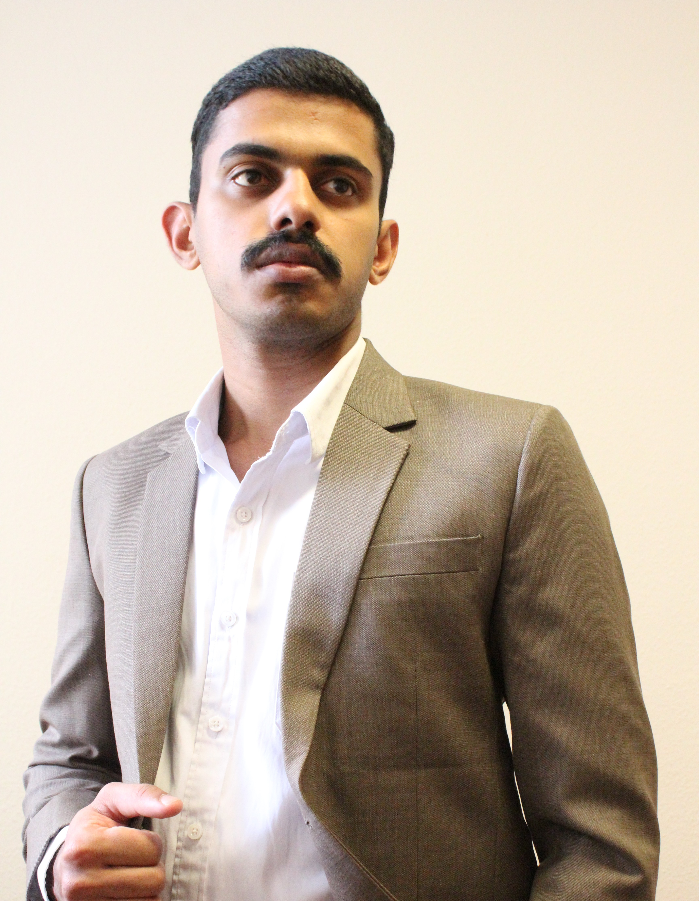

Maritime Operations
Practical exposure to port calls, navigation routines, cargo-watch support, bunkering preparation, arrivals and departures, bridge routines, vessel documentation and ship–shore coordination.
MARITIME • OPERATIONS • DATA
Maritime Operations · Fleet Support · Vessel Performance · HSEQ · Data
B.Sc. Nautical Science graduate with seagoing tanker experience, shore-side operations leadership and scientific data-analysis experience in Germany. I am building a long-term shore-based maritime career combining practical shipboard understanding, operational coordination, safety awareness and digital skills.

TARGET ROLES
01 / PROFILE
Practical exposure to port calls, navigation routines, cargo-watch support, bunkering preparation, arrivals and departures, bridge routines, vessel documentation and ship–shore coordination.
Experience supporting ISM routines, lifesaving-equipment checks, JSA documentation, maintenance records, defect reporting, certificate verification and PMS-related shipboard activities.
Python, Excel, Matplotlib and Git combined with KPI monitoring, server-based data processing, issue tracking, workflow coordination and operational follow-up.
02 / EXPERIENCE
03 / EDUCATION
LEIPZIG UNIVERSITY
Thesis: Trade-Wind Cumulus in a Warmer Climate
Developed scientific data-processing, statistical-analysis and visualisation skills that can be applied to operational decision support, vessel-performance monitoring and weather-related maritime work.
AMET UNIVERSITY
Maritime education covering navigation, ship stability, cargo handling, ship operations, ship construction, bridge resource management, voyage planning, maritime law and marine engineering automation and control.
04 / CERTIFICATIONS
STCW V/1-1
Basic tanker training covering oil and chemical cargo hazards, safety procedures, pollution prevention, emergency response and safe operational practices.
STCW V/1-2
Basic tanker training covering liquefied-gas cargo hazards, tanker safety procedures, emergency discipline and safe operational awareness.
Certificate copies and verification details are available directly to employers on request rather than being published publicly.
05 / DATA & PROJECTS
DATA TOOLKIT
My data experience combines scientific research workflows with practical operational reporting. At TROPOS and during my Master's work, I worked with large scientific datasets stored on research servers and used Python to process, organise and analyse the data.
This included working with multi-terabyte datasets, checking data quality, identifying errors and inconsistencies, restructuring files, automating repetitive processing steps and producing visualisations for scientific analysis.
The work required accuracy because a small problem in an input file, variable or processing step could influence the final analysis. I therefore developed a structured approach to checking data before using it further in the workflow.
I also gained operational-data experience through Flink, where I worked with KPI monitoring, Excel-based reporting, issue tracking and day-to-day operational follow-up.
PERSONAL TECHNICAL PROJECT
During my B.Sc. Nautical Science studies, I designed and built a miniature remotely controlled vessel as a personal technical project. The aim was to combine my interest in ships with electronics, programming, automation and practical engineering.
I built the system around an Arduino Mega 2560 and a NodeMCU ESP8266. The Arduino handled mechanical functions such as propulsion, steering and pump operation, while the ESP8266 provided wireless connectivity.
I also developed a locally hosted HTML/CSS control interface that could be accessed from a device connected to the same Wi-Fi network. Through this interface, different vessel functions could be operated remotely.
The model included propulsion and steering control, navigation-light logic and pump functions used to simulate aspects of loading and discharging operations.
The project gave me practical experience in troubleshooting, systems integration and independent technical learning. It also developed my interest in modern maritime technologies such as vessel automation, remote monitoring, digital systems and connected ship operations.
CURRENTLY EXPLORING
Particularly interested in fleet operations, PMS/technical support, vessel performance, HSEQ, marine operations and early-career superintendent/trainee pathways.